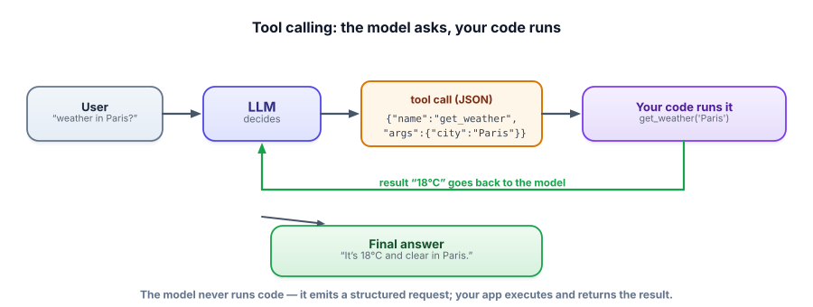
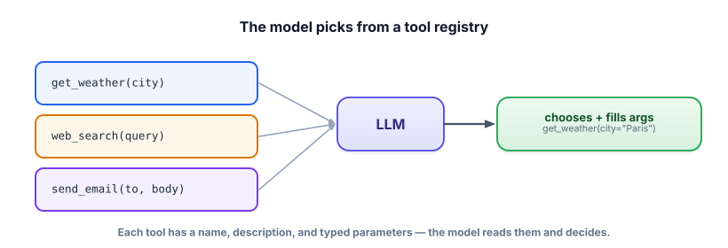

Tool / function calling
This is the mechanism that makes agents possible: the model emits a structured request to call one of your functions, your code runs it, and the result goes back. Master this round-trip and you can connect an LLM to anything — calculators, APIs, databases, the whole outside world.
The key idea: the model requests, your code executes
An LLM can’t actually run code or call an API — it only produces text. Tool calling (a.k.a. function calling) is a disciplined way to bridge that gap: you describe the functions available, and when the model wants one, it outputs a structured request (which function, what arguments). Your code executes the real function and hands the result back to the model, which continues. The model decides what to do; your code decides how it actually happens — and that separation is what keeps it safe.

A tool is a function the model may invoke. You expose it with a tool schema: a name, a plain-English description, and a typed parameter spec (JSON schema). When the model chooses a tool, it returns a tool call — the chosen name plus arguments. Your code runs the function and returns a tool result, which you append to the conversation so the model can use it. Modern model APIs (and runtimes like Ollama) support this natively, constraining the output so the tool call is always valid.

Step through the round-trip
Tool-call stepper
Pick a request and step through what actually happens under the hood.
Define a tool with a schema, let the model call it, run it, and feed the result back — all free and local.
import ollama
def get_weather(city):
return f"{city}: 18°C, clear" # pretend this calls a real API
tools = [{
"type": "function",
"function": {
"name": "get_weather",
"description": "Get the current weather for a city.",
"parameters": {"type": "object",
"properties": {"city": {"type": "string"}}, "required": ["city"]},
}}]
msgs = [{"role": "user", "content": "What's the weather in Paris?"}]
resp = ollama.chat(model="llama3.2", messages=msgs, tools=tools)
for call in resp["message"].get("tool_calls", []): # the model asked to call a tool
args = call["function"]["arguments"]
result = get_weather(**args) # YOUR code runs it
msgs.append(resp["message"])
msgs.append({"role": "tool", "content": result}) # feed result back
final = ollama.chat(model="llama3.2", messages=msgs)
print(final["message"]["content"]) # -> "It's 18°C and clear in Paris."The tool-role message is how the result re-enters the conversation. From here, wrapping this in a loop (so the model can call tools repeatedly) gives you a full agent — exactly Lesson 4.3.
- Tool calling = the model emits a structured request; your code executes and returns the result.
- A tool schema (name + description + typed parameters) is what the model reads to choose and fill a call.
- Tool descriptions are prompt surface — clear names and descriptions dramatically improve tool selection.
- Return the result as a tool-role message so the model can use it.
- Prefer few, focused, well-described tools; native tool-calling APIs keep the call valid by construction.
Your agent keeps calling the wrong tool — it uses search_web when it should use search_internal_docs. What’s the highest-leverage fix?
1. Write a tool schema for create_calendar_event(title, date, attendees). Which fields are required, and what types?
2. Why is returning the tool result as a tool-role message better than just pasting it into a new user message?
3. Your tool occasionally receives bad arguments (e.g., a date like “next Tuesday” instead of ISO). Where do you handle this, and how?
▸ Show solutions & reasoning
1. {title: string (required), date: string ISO (required), attendees: array of strings (optional, default [])}. Mark title and date required so the model must supply them; make attendees optional with an empty-list default so a solo event is valid. Typed parameters let the runtime constrain the model’s output to a valid shape.
2. The tool role tells the model (and the API) explicitly “this is the output of the tool you called,” keeping the conversation structure clean and letting native tool-calling track the call/result pairing. Pasting it as a user message blurs who said what, can confuse multi-tool sequences, and loses the link between the call and its result.
3. Handle it in your code, at the tool boundary: validate/normalize the arguments before executing (e.g., parse “next Tuesday” into an ISO date, or reject and return an error). If invalid, return a clear error string as the tool result so the model can correct and retry. Never trust model-supplied arguments blindly — validate them just like any untrusted input, which also previews the guardrails of Lesson 4.8.
Three things separate a toy tool integration from a robust one.
- Parallel tool calls — capable models can request several tools at once (“get weather in Paris and London”), so handle a list of tool calls, run them (possibly concurrently), and return all the results.
- Error handling — tools fail: APIs time out, arguments are bad, results come back empty. Return errors to the model as tool results (“get_weather failed: city not found”) so it can adapt, rather than crashing the loop. This turns failures into recoverable steps.
- Idempotency and retries — for actions with side effects, such as sending email or charging a card, design so that a retry cannot double-fire.
And treat tools as a serious security boundary. The model decides which tool to call and with what arguments, and that decision can be influenced by untrusted input (a malicious document, a crafted user message — prompt injection, Track 7). So: never expose a dangerous tool (delete data, send money, run shell commands) without validation and, for high-stakes actions, human approval (Lesson 4.8). Whitelist tools per context, validate every argument, and assume the model’s tool calls can be adversarially steered. The convenience of “the model can just call your functions” is also its risk — give it only capabilities you’d be comfortable a stranger triggering.
One tool call is useful; the real power comes from repeating — letting the model call tools, see results, and decide again until the goal is met. That’s the agent loop. Next: the agent loop (ReAct).